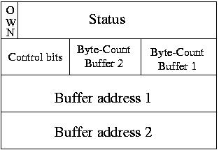

RTEMS Network Supplement
RTEMS Network Supplement
This DEC chip uses the host memory to store the incoming Ethernet frames and the descriptor of these frames. We have chosen to use 7 receive buffers and 1 transmit buffer to optimize memory allocation due to cache and paging problem that will be explained in the section Encountered Problems.
To reference these buffers to the DEC chip we use a buffer descriptors ring. The descriptor structure is defined in the Buffer Descriptor Figure. Each descriptor can reference one or two memory buffers. We choose to use only one buffer of 1520 bytes per descriptor.
The difference between a receive and a transmit buffer descriptor is located in the status and control bits fields. We do not give details here, please refer to the [DEC21140 Hardware Manual].



 RTEMS Network Supplement
RTEMS Network Supplement
Copyright © 1988-2008 OAR Corporation